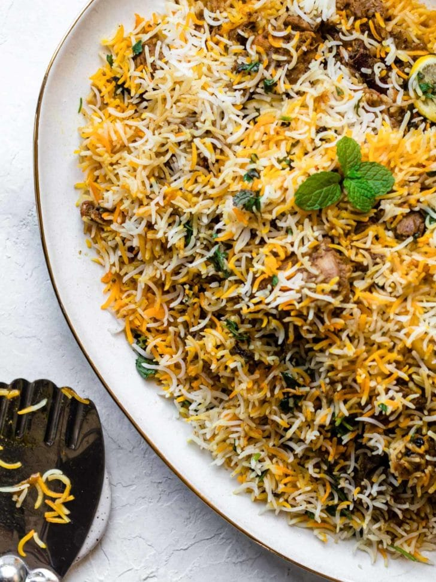

Biryani

Description
Behold! An authentic Chicken Biryani recipe with simple, easy-to-follow instructions (no curveballs!) and mouthwatering, traditional Pakistani and Indian flavor. This recipe includes tips on how to get fluffy rice, tender chicken, and the distinct biryani taste. Tested to perfection!
Ingredients
- Oil/Ghee
- Onions
- Bone-in, cut up, skinless chicken
- Whole Spices
- Garlic + Ginger
- Tomatoes
- Yogurt
- Rice
- Dried Plums (Alu Bukhara)
Steps
- Prepare saffron-kewra water and chop veggies
- Saute the onions
- Cook biryani on low heat for 5-6 minutes
- Serve hot chicken biryani with your favourite chutney or raita